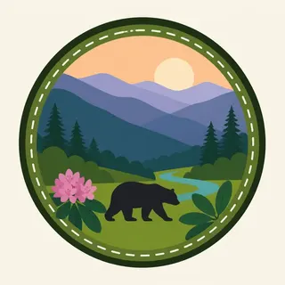

01
The crest
Newfound Gap and the high trail along the state line are the long view. Spruce-fir forest here is a relic of a colder climate, and it has been stressed by insects and air pollution. The view includes that damage if you know to see it.
TrailMark Archive Edition
Tennessee | North Carolina
Ridge after ridge goes blue, and the hollows hold a forest older and wetter than the name smoke suggests.
Archive No. TM-GSM-009
National Park since 1934
Collection Appalachian Parks
Park Overview
Great Smoky Mountains National Park was established in 1934 and dedicated in 1940, astride the Tennessee and North Carolina line. Unlike the western parks carved from public domain, much of this land was purchased from private owners and timber companies.
The blue haze is volatile compounds from the forest, humidity, and distance, not only woodsmoke. Cove hardwoods, spruce-fir on the high ridges, and a famous diversity of salamanders are the biological plot.
Clingmans Dome is the park high point on the state line. The name is in use alongside Kuwohi, the Cherokee name the park has also recognized. This is Cherokee homeland before it is a scenic drive.
Emotional Thesis
Western parks often offer one cliff and a lot of air. The Smokies offer repetition: ridge, gap, ridge, until the farthest one is only a color.
Down in the hollow the repetition stops. A single creek, rhododendron, and the sound of water replace the panorama. Both scales are the park.
Landscape Highlights
01
Newfound Gap and the high trail along the state line are the long view. Spruce-fir forest here is a relic of a colder climate, and it has been stressed by insects and air pollution. The view includes that damage if you know to see it.
02
Sheltered valleys of tulip tree, basswood, and hemlock, where the mountains make their own mild weather. This is the eastern old-forest feeling, second growth and remnant together.
03
Mossy boulders, rhododendron tunnels, and mills from the logging era. Cades Cove is the open cultural landscape. The creek trails are the quieter text.
Wildlife
The Smokies are famous for black bears and increasingly for elk reintroduced to the Cataloochee area. The less famous wealth is salamanders, songbirds, and fungi.
01
Black bears are common. A bear that approaches a picnic table has usually been trained by food. Distance and a clean table are the courtesy.
02
Elk in Cataloochee are a restoration, not a zoo. Stay in the car or well back, especially in the rut.
03
Synchronous fireflies are wildlife. Lights, crowds, and off-trail feet can wreck the show you came to see.
Geology
The Smokies are part of an ancient Appalachian collision, rounded by time until the drama is repetition rather than a single cliff.
01
The rocks are old even by Appalachian standards, metamorphic stone from a mountain-building event long before the Rockies.
02
Coves and balds are the topography visitors remember: sheltered valleys and open grassy summits whose origins are still debated.
03
The haze itself is partly chemistry from the trees. The mountains look soft because the air is full of the forest.
Serviceberry, then dogwood, then the mountain laurel. Wildflowers on the cove floors arrive before the canopy closes.
Green tunnels, afternoon thunderstorms, and the synchronous firefly window. Humidity is part of the picture, not a flaw in it.
The famous color, arriving at different weeks by elevation. A high trail and a low cove can be two seasons on one day.
Ice on the crest and a readable forest in the hollows, the rhododendron leaves curled against the cold. Newfound Gap can be a different climate from Townsend. Check the road.
Photography
The Smokies go flat if you photograph one slope. They make sense when several distances share the frame.
01
The first hours fill the gaps. That is the picture the name refers to. By noon the same ridge can look ordinary.
02
A rhododendron or a wet rock keeps the blue from becoming a backdrop with nothing to stand on.
03
If the bear is aware of you and changing its behavior, you are too close, even if the photo is not finished.
Field Notes
These mountains do not impress by a single drop. They impress by how many times the ridge repeats before it becomes weather.
TrailMark Field Notes

Badge Story
The Smokies mark has to hold both the hardwood green and the blue distance, or it will look like any other eastern hill.
Layers of ridge, not one peak, are the silhouette.
Mist is part of the design, not a fade from poor printing.
It should feel humid even as a small circle.
Archive No.009
LocationState-line crest
ReleaseAppalachian Mark
Stewardship / Safety
The Smokies are among the most visited national parks. The rules are simple because the pressure is not. Check NPS for road, firefly, and bear alerts.
Store food as if a bear is already curious. Coolers in the open and picnic leftovers are how bears get killed later.
Do not crowd elk or bears for a photograph. The animal leaving is the bad outcome.
Stay on trails in the cove forest. Off-trail feet find rare plants faster than you notice them.
Cemeteries and cabin sites are not props. They are the park human history. Look, and leave them as you found them.
Current conditions, fees, and alerts are on the National Park Service site.
Continue the Archive
Shenandoah continues the Appalachian park idea north and is still ahead in the archive. Olympic is the Pacific rainforest comparison, already open.